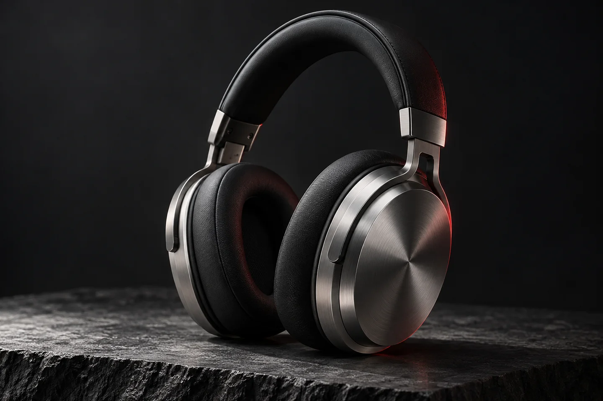

Design que se sente
Texturas e imagens em destaque para explorar a personalidade do produto.
Conceito por WunderHub Marca fictícia · demonstração visual
Aura One / Studio Series
Feito para ouvir os detalhes. Desenhado para fazer parte do seu dia.
Conhecer o produto
Uma página de produto que aproxima o visitante do material, da forma e da experiência.
Texturas e imagens em destaque para explorar a personalidade do produto.
Especificações claras e uma jornada simples entre conhecer e escolher.
Uma direção visual que acompanha a marca em cada tela.
Este é um exemplo de direção visual. Seu projeto recebe conteúdo, identidade e funcionalidades próprios.
Cores, tipografia, fotos, textos e estrutura são definidos a partir da sua marca. A ideia é construir uma presença que represente o seu negócio.
Podemos conversar sobre catálogo, formulários, agendamento, integrações e conteúdo. O escopo e as ferramentas são definidos conforme a necessidade, antes do desenvolvimento.
Este conceito mostra uma apresentação de produto. Catálogo, carrinho e pagamento podem fazer parte do seu projeto.